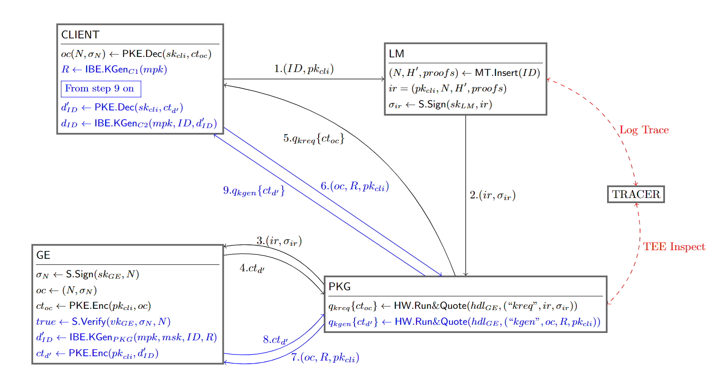
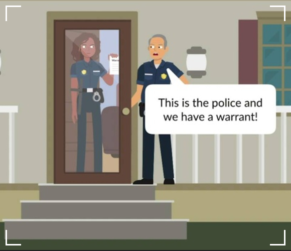
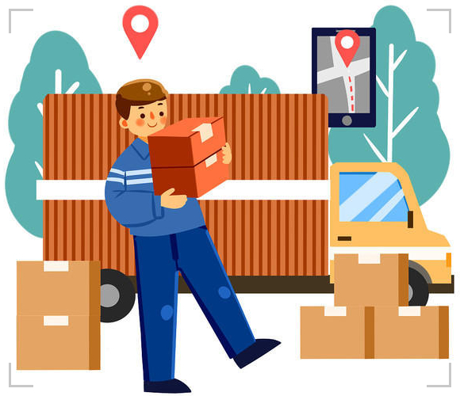

Accountable Decryption System using Trusted Hardware
What is Portex?
Accountability is key to detecting and punishing illegal actions in cryptosystems,
but ensuring accountability for decryption is challenging.
The decryption is normally conducted by end-users locally, where a decrypter may refuse to provide auditable information on his decryption.
Portex addresses this by using a Trusted Execution Environment (TEE) to force each decryption to generate publicly verifiable logs, ensuring accountability.
Meanwhile, we have noticed the risk of the compromised TEE. We further introduce a tracing mechanism to inspect the TEE's behaviors to guarantee that the attacks on trusted hardware are traceable.
Highlights
| 1. We propose a practical accountable cryptosystems, in which the users are accountable for their decryption. Each decryption will be faithfully recorded by the log maintainer, whose actions are publicly verifiable. |
| 2. Our proposed scheme relies on TEE, but we further take consider the mainstream vulnerability of TEE that may leak the users’ private keys and destroy accountability. We accordingly design a tracing mechanism to make trusted hardware, additionally, accountable for the private key generation and distribution. |
|
3. We formalize the syntax and security definitions of Portex. The formal security analyses indicate that our system is provably secure, which satisfies the properties of key privacy, fairness, completeness, and TEE traceability.
|
|
4. We provide a full-functional implementation for Portex and evaluate performance in terms of theoretical complexity, running time, and log size for major functionalities. The experimental results demonstrate the feasibility and efficiency of our system.
|
Designs
Four types of entities are involved: private key generator PKG, a log manager LM, CLIENT and TRACER
. The PKG is required to run inside TEEs. The log manager and users’ platforms do not necessarily to support TEEs. The main idea behind Portex is to run PKG
inside a TEE and force the action of key generation to render a public auditable log.

- -PKG: The PKG is responsible for generating and distributing CLIENT’s private key.
- -LM: The LM updates and stores the logs when the PKG distributes a private key.
- -CLIENT: The CLIENT performs the decryption of a ciphertext.
- -TRACER: The TRACER is responsible for detecting the wrongdoing of CLIENT and PKG.
Applications
Accountable warrant execution
Government and law enforcement with court-issued warrants commonly access citizens' sensitive information. However, the potential for warrant abuse or unauthorized access exists, jeopardizing user privacy. Our system makes law enforcement officers accountable for accessing and decrypting sensitive information, which prevents unsafe warrant usage.

Privacy-preserving delivery
Current package delivery solutions are susceptible to information leakage as they transmit sensitive information,
such as name and address, in plaintext. Our system uses an encrypted barcode to tag this information,
limiting access to only authorized barcode readers.
Any access is logged and auditable, ensuring accountability and preventing misuse.

Demonstration
The implementation is published in Portex-tee/Portex (github.com). Here we present the functions:
Key Request
Key Generation
Encryption
Decryption
Log Trace
TEE Inspect
Acknowledgements
Rujia Li and Sisi Duan were supported in part by National Key
R&D Program of China under grant No. 2022YFB2701700 and National Science Foundation of China under grant No. 92267203. Yuanzhao Li and Qi
Wang were supported by Guangdong Provincial Key Laboratory
(Grant No. 2020B121201001). Rujxia Li was also supported by postdoctoral fellowships from the Tsinghua Shuimu Scholar.
We also gratefully acknowledge financial support from EPSRC under grants
EP/V000454/1 (CAP-TEE: Capability Architectures
for Trusted Execution); EP/S030867/1 (SIPP - Secure IoT Processor Platform with Remote Attestation);
and EP/R012598/1 (User-Controlled Hardware Security. Anchors: Evaluation and Designs).